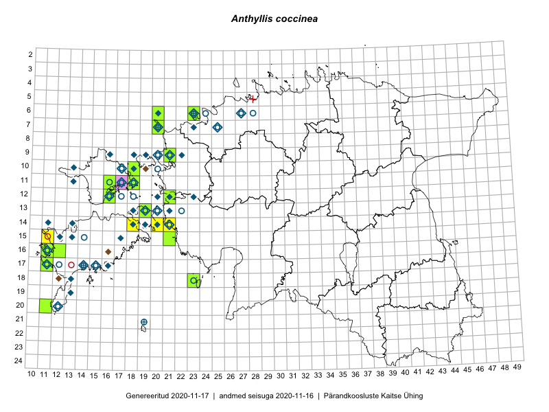

Anthyllis coccinea — veripunane koldrohi
Fabaceae :: Anthyllis coccinea (L.) Beck (206); Anthyllis vulneraria f. coccinea L. (2)

Kaart põhineb 238 kirjel:
vaatlusi 67
herbaareksemplare 141
PKÜ kirjeid1 13
LVA kirjeid2 3
EELISe kirjeid3 14
Taime kaasaegsed ja ajaloolised leiukohad asuvad 61 ruudus.
Tingmärgid ja leidudega ruutude arvud periooditi uues (u) ja 2005 andmestikus (v)
| █ | vahemik | u4 | v5 |
|---|---|---|---|
| █ | 2006–2020 | 21 | – |
| ◆/◇ | 1971–2005 | 46 | 46 |
| ○ | 1921–1970 | 29 | 6 |
| + | kuni 1920 | 4 | 1 |
| × | hävinud | – | 0 |
| ? | kaheldav | – | 0 |
| Ruut | Leidja(d) | Leiuaeg | Kirje |
|---|---|---|---|
| 12-21 | Rein Kalamees | 2020-06-18 | TAA0153724: Anthyllis coccinea (L.) Beck |
| 09-21 | Ott Luuk | 2020-06-16 | TAA0153106: Anthyllis coccinea (L.) Beck |
| 13-19 | Helene Urva | 2019-07-22 | LVA: -1575989880 |
| 13-19 | Peedu Saar, Toomas Kukk, Ott Luuk | 2019-05-14 | TAA0149343: Anthyllis coccinea (L.) Beck |
| 10-18 | Peedu Saar | 2018-07-09 | TAA0146838: Anthyllis coccinea (L.) Beck |
| 06-23 | Peedu Saar | 2018-07-05 | TAA0146845: Anthyllis coccinea (L.) Beck |
| 06-23 | Peedu Saar | 2018-07-05 | TAA0146846: Anthyllis coccinea (L.) Beck |
| 06-23 | Ott Luuk, Meeli Mesipuu | 2018-07-05 | TAA0145999: Anthyllis coccinea (L.) Beck |
| 18-23 | Indrek Tammekänd | 2018-06-01 | TAA0144479: Anthyllis coccinea (L.) Beck |
| 15-21 | Toomas Kukk, Ilmar Uibopuu | 2018-05-25 | TAA0146638: Anthyllis coccinea (L.) Beck |
| 07-20 | Peedu Saar, Elle Roosaluste, Kaili Orav | 2017-05-29 | TAA0141239: Anthyllis coccinea (L.) Beck |
| 09-21 | Jaak-Albert Metsoja | 2016-07-07 | TAA0134132: Anthyllis coccinea (L.) Beck |
| 06-20 | Jaak-Albert Metsoja | 2016-06-30 | TAA0134086: Anthyllis coccinea (L.) Beck |
| 06-20 | Jaak-Albert Metsoja | 2016-06-30 | TAA0134114: Anthyllis coccinea (L.) Beck |
| 11-17 | Rita Miller | 2016-06-18 | EELIS: -220038040 |
| 11-17 | Rita Miller | 2016-06-18 | EELIS: -56797648 |
| 06-23 | Enda Pärisma | 2016-06-17 | LVA: 714315472 |
| 11-17 | Rita Miller | 2016-06-03 | EELIS: -1550088428 |
| 11-17;11-18 | Rita Miller | 2016-06-03 | EELIS: -221357250 |
| 11-17 | Rita Miller | 2016-06-03 | EELIS: 552506810 |
| 11-17;11-18 | Rita Miller | 2016-06-01 | EELIS: -567587512 |
| 11-17 | Rita Miller | 2016-06-01 | EELIS: 1925796770 |
| 11-17 | Rita Miller | 2016-05-29 | EELIS: -225873714 |
| 16-12 | Triin Reitalu, Mari Reitalu | 2015-07-03 | TAA0140146: Anthyllis coccinea (L.) Beck |
| 14-20 | Meeli Mesipuu, Kadri Tali | 2015-06-26 | ruut/ala: Anthyllis coccinea (L.) Beck |
| 16-11 | Mari Reitalu | 2015-06-22 | TAA0140148: Anthyllis coccinea (L.) Beck |
| 12-16 | Eeva-Maria Jeletsky, Tarmo Niitla | 2015-06-21 | TAA0119147: Anthyllis coccinea (L.) Beck |
| 12-16 | Eeva-Maria Jeletsky, Tarmo Niitla | 2015-06-21 | TAA0119148: Anthyllis coccinea (L.) Beck |
| 12-16 | Eeva-Maria Jeletsky, Tarmo Niitla | 2015-06-21 | TAA0119149: Anthyllis coccinea (L.) Beck |
| 11-16 | Eeva-Maria Jeletsky, Tarmo Niitla | 2015-06-20 | ruut/ala: Anthyllis coccinea (L.) Beck |
| 11-16 | Eeva-Maria Jeletsky, Tarmo Niitla | 2015-06-20 | TAA0119246: Anthyllis coccinea (L.) Beck |
| 11-18 | Eeva-Maria Jeletsky, Tarmo Niitla | 2015-06-17 | TAA0119278: Anthyllis coccinea (L.) Beck |
| 14-21 | Helene Urva | 2015-06-06 | LVA: 1090715136 |
| 06-23 | Ott Luuk | 2015-06-05 | TAA0139133: Anthyllis coccinea (L.) Beck |
| 06-23 | Ott Luuk, Mari Metsoja | 2015-06-04 | TAA0139137: Anthyllis coccinea (L.) Beck |
| 06-23 | Ott Luuk, Mari Metsoja | 2015-06-04 | TAA0139138: Anthyllis coccinea (L.) Beck |
| 06-23 | Ott Luuk | 2015-06-04 | TAA0139124: Anthyllis coccinea (L.) Beck |
| 06-23 | Ott Luuk | 2015-06-04 | TAA0139125: Anthyllis coccinea (L.) Beck |
| 20-11 | Oliver Parrest, Mari Reitalu | 2015-05-26 | TAA0140639: Anthyllis coccinea (L.) Beck |
| 17-11 | Ott Luuk | 2014-06-28 | TAA0116857: Anthyllis coccinea (L.) Beck |
| 11-17;11-18 | Rita Miller | 2013-06-03 | EELIS: -1761174550 |
| 15-11 | Toomas Kukk | 2012-07-15 | punkt: Anthyllis coccinea (L.) Beck |
| 11-17;11-18 | Rita Miller | 2011-05-25 | EELIS: -1955449514 |
| 13-19 | Peteris Evarts-Bunders | 2011-05-22 | punkt: Anthyllis coccinea (L.) Beck |
| 14-18 | Peteris Evarts-Bunders | 2011-05-17 | punkt: Anthyllis coccinea (L.) Beck |
| 14-21 | Peteris Evarts-Bunders | 2010-07-21 | punkt: Anthyllis coccinea (L.) Beck |
| 11-17;11-18 | Rita Miller | 2010-07-06 | EELIS: 1522650880 |
| 11-17 | Rita Miller, Varje Vendla | 2009-08-05 | EELIS: -1128030767 |
| 07-20 | J.-M. Habicht | 2009-07-08 | TAM0015559: Anthyllis coccinea (L.) Beck |
| 07-20 | Thea Kull | 2009-07-07 | punkt: Anthyllis coccinea (L.) Beck |
| 07-20 | Thea Kull | 2009-07-07 | punkt: Anthyllis coccinea (L.) Beck |
| 07-20 | Thea Kull | 2009-07-07 | punkt: Anthyllis coccinea (L.) Beck |
| 11-17 | Liisu Miller, Rita Miller, Sander Miller | 2009-06-09 | EELIS: -1532022047 |
| 12-21 | Martin Silts, Kai Vellak, Mare Toom, Aveliina Helm | 2008-07-07 | punkt: Anthyllis coccinea (L.) Beck |
| 12-21 | 2008-07-01 | punkt: Anthyllis coccinea (L.) Beck | |
| 14-18 | Egle Puidet | 2004-06-23 | TU258137: Anthyllis coccinea (L.) Beck |
| 14-18 | Egle Puidet | 2004-06-23 | TU258138: Anthyllis coccinea (L.) Beck |
| 14-18 | Egle Puidet | 2004-06-23 | TU258139: Anthyllis coccinea (L.) Beck |
| 14-18 | Egle Puidet | 2004-06-23 | TU258140: Anthyllis coccinea (L.) Beck |
| 14-18 | Egle Puidet | 2004-06-23 | TU258141: Anthyllis coccinea (L.) Beck |
| 07-23 | Egle Puidet | 2004-06-23 | TU258180: Anthyllis coccinea (L.) Beck |
| 07-23 | Egle Puidet | 2004-06-23 | TU258181: Anthyllis coccinea (L.) Beck |
| 07-23 | Egle Puidet | 2004-06-23 | TU258182: Anthyllis coccinea (L.) Beck |
| 07-23 | Egle Puidet | 2004-06-23 | TU258183: Anthyllis coccinea (L.) Beck |
| 07-23 | Egle Puidet | 2004-06-23 | TU258184: Anthyllis coccinea (L.) Beck |
| 13-19 | Egle Puidet | 2004-06-22 | TU258124: Anthyllis coccinea (L.) Beck |
| 13-19 | Egle Puidet | 2004-06-22 | TU258125: Anthyllis coccinea (L.) Beck |
| 13-19 | Egle Puidet | 2004-06-22 | TU258126: Anthyllis coccinea (L.) Beck |
| 13-19 | Egle Puidet | 2004-06-22 | TU258127: Anthyllis coccinea (L.) Beck |
| 13-19 | Egle Puidet | 2004-06-22 | TU258128: Anthyllis coccinea (L.) Beck |
| 13-19 | Egle Puidet | 2004-06-22 | TU258129: Anthyllis coccinea (L.) Beck |
| 13-19 | Egle Puidet | 2004-06-22 | TU258130: Anthyllis coccinea (L.) Beck |
| 13-19 | Egle Puidet | 2004-06-22 | TU258131: Anthyllis coccinea (L.) Beck |
| 13-19 | Egle Puidet | 2004-06-22 | TU258132: Anthyllis coccinea (L.) Beck |
| 13-19 | Egle Puidet | 2004-06-22 | TU258133: Anthyllis coccinea (L.) Beck |
| 19-13 | Egle Puidet | 2004-06-22 | TU258142: Anthyllis coccinea (L.) Beck |
| 19-13 | Egle Puidet | 2004-06-22 | TU258143: Anthyllis coccinea (L.) Beck |
| 18-13 | Egle Puidet | 2004-06-22 | TU258144: Anthyllis coccinea (L.) Beck |
| 18-13 | Egle Puidet | 2004-06-22 | TU258145: Anthyllis coccinea (L.) Beck |
| 18-13 | Egle Puidet | 2004-06-22 | TU258146: Anthyllis coccinea (L.) Beck |
| 13-19 | Meeli Mesipuu, Katrin Jürgens | 2001-10-24 | PKÜ: 7787 |
| 17-16 | Tõnu Ploompuu | 2001 | punkt: Anthyllis coccinea (L.) Beck |
| 13-21 | Toomas Kukk, Bert Holm | 2000-12-10 | PKÜ: 3278 |
| 12-23 | Tõnu Ploompuu | 2000-07-10–2000-07-15 | ruut/ala: Anthyllis coccinea (L.) Beck |
| 14-21 | Toomas Kukk, Andres Luhamaa | 1999-08-20 | PKÜ: 434 |
| 18-12 | Toomas Kukk, Andres Luhamaa, Katrin Heinsoo | 1999-08-19 | PKÜ: 1450 |
| 18-13 | Toomas Kukk | 1999-08-17 | PKÜ: 1066 |
| 20-12 | Toomas Kukk | 1999-08-12 | PKÜ: 1319 |
| 18-13 | Toomas Kukk, Tõnu Feldmann | 1999-08-11 | PKÜ: 1297 |
| 10-19 | Elle Puurmann, Toomas Kukk, Andres Luhamaa | 1999-08-02 | PKÜ: 968 |
| 17-15 | Eerik Leibak, Toomas Kukk, Andres Luhamaa, Peter Veen | 1999-07-20 | PKÜ: 1145 |
| 16-16;17-16 | Toomas Kukk, Andres Luhamaa | 1999-07-17 | PKÜ: 1445 |
| 13-20 | Toomas Kukk | 1999-06-19 | ruut/ala: Anthyllis coccinea (L.) Beck |
| 14-19 | Toomas Kukk | 1999-06-16–1999-06-17 | ruut/ala: Anthyllis coccinea (L.) Beck |
| 14-20 | Toomas Kukk | 1999-06-16 | ruut/ala: Anthyllis coccinea (L.) Beck |
| 14-20 | Toomas Kukk | 1999-06-16 | PKÜ: 6968 |
| 14-20 | Toomas Kukk | 1999-06-14–1999-06-17 | ruut/ala: Anthyllis coccinea (L.) Beck |
| 14-21 | Toomas Kukk | 1999-06-14 | ruut/ala: Anthyllis coccinea (L.) Beck |
| 14-21 | Toomas Kukk | 1999-06-14 | ruut/ala: Anthyllis coccinea (L.) Beck |
| 06-27 | Peeter Tarlap | 1999-06-13 | TALL C003866: Anthyllis coccinea (L.) Beck |
| 20-12 | Toomas Kukk, Eerik Leibak | 1999-06-10 | PKÜ: 1483 |
| 12-21 | Tõnu Ploompuu | 1999-06-03–1999-06-07 | ruut/ala: Anthyllis coccinea (L.) Beck |
| 12-16 | Taavi Tuulik, Kai Vahtra | 1999-05-27 | EELIS: -1606420668 |
| 06-20 | Toomas Kukk, Vilma Kuusk | 1998-07-29 | ruut/ala: Anthyllis coccinea (L.) Beck |
| 06-20;07-20 | Toomas Kukk, Vilma Kuusk | 1998-07-28 | PKÜ: 4390 |
| 07-20 | Toomas Kukk, Vilma Kuusk | 1998-07-27–1998-07-30 | ruut/ala: Anthyllis coccinea (L.) Beck |
| 13-20 | Tiiu Kull, Vilma Kuusk | 1998-06-25–1998-06-27 | ruut/ala: Anthyllis coccinea (L.) Beck |
| 17-11 | Toomas Kukk | 1998-06-19 | ruut/ala: Anthyllis coccinea (L.) Beck |
| 13-20 | M. Reitalu | 1998 | ruut/ala: Anthyllis coccinea (L.) Beck |
| 17-14 | Toomas Kukk, Elle Roosaluste | 1995-08-16 | ruut/ala: Anthyllis coccinea (L.) Beck |
| 13-20 | Lemmi Jõe | 1995-06-02 | TAM0025192: Anthyllis coccinea (L.) Beck |
| 12-21 | Uve Ramst | 1994-06-15 | TAM0025191: Anthyllis coccinea (L.) Beck |
| 09-18 | Toomas Kukk | 1994-05-23 | TAA0074335: Anthyllis coccinea (L.) Beck |
| 14-11 | Raino Lampinen, Tuula Lampinen | 1993-08-13 | TAA0074342: Anthyllis coccinea (L.) Beck |
| 07-20 | Malle Leht | 1993-06-16 | TAA0074336: Anthyllis coccinea (L.) Beck |
| 13-21 | Ülo Niinemets | 1992-07-17 | TAA0074334: Anthyllis coccinea (L.) Beck |
| 16-11 | Toomas Kukk | 1991-06-29 | TAA0074337: Anthyllis coccinea (L.) Beck |
| 16-11 | Toomas Kukk | 1991-06-29 | TAA0074340: Anthyllis coccinea (L.) Beck |
| 16-11 | Toomas Kukk | 1991-06-27 | TAA0074299: Anthyllis coccinea (L.) Beck |
| 14-13 | Jaakko Savola | 1990-05-13 | TU253539: Anthyllis coccinea (L.) Beck |
| 16-11 | Mare Liik | 1989-07-11 | TALL C010986: Anthyllis coccinea (L.) Beck |
| 16-11 | Urmas Laansoo | 1989-07-09 | TALL C000743: Anthyllis coccinea (L.) Beck |
| 16-11 | Mare Liik | 1989-07-09 | TALL C010987: Anthyllis coccinea (L.) Beck |
| 16-11 | Jüri Elliku | 1989-07-08 | TALL C009789: Anthyllis coccinea (L.) Beck |
| 16-11 | Urmas Laansoo | 1989-07-05 | TALL C000742: Anthyllis coccinea (L.) Beck |
| 15-12 | Mari Reitalu | 1989–1999 | ruut/ala: Anthyllis coccinea (L.) Beck |
| 09-22 | Malle Leht, Heljo Krall, Ülle Sillasoo | 1988-07-20 | ruut/ala: Anthyllis coccinea (L.) Beck |
| 07-25 | N. Ingerpuu, H. Krall, L. Kannuke | 1986-07-18 | ruut/ala: Anthyllis coccinea (L.) Beck |
| 15-17 | L. Viljasoo, H. Krall | 1985-09-12 | ruut/ala: Anthyllis coccinea (L.) Beck |
| 14-18 | Vilma Kuusk, Maria Abakumova, Linda Viljasoo, A. Saare | 1985-08-08 | ruut/ala: Anthyllis coccinea (L.) Beck |
| 15-13 | botaaniline ekspeditsioon ZBI | 1984-06-27 | ruut/ala: Anthyllis coccinea (L.) Beck |
| 12-20 | 1984-06-13 | ruut/ala: Anthyllis coccinea (L.) Beck | |
| 10-17 | Taavi Tuulik | 1984–1986 | ruut/ala: Anthyllis coccinea (L.) Beck |
| 14-18 | Maret Kask, Linda Viljasoo | 1983-09-09 | ruut/ala: Anthyllis coccinea (L.) Beck |
| 14-20 | Linda Viljasoo, Heljo Krall | 1983-08-25–1983-08-26 | ruut/ala: Anthyllis coccinea (L.) Beck |
| 13-18 | M. Leht, M. Abakumova | 1983-08-23 | ruut/ala: Anthyllis coccinea (L.) Beck |
| 14-19 | Linda Viljasoo, Heljo Krall, Vilma Kuusk | 1983-08-22–1986-06-02 | ruut/ala: Anthyllis coccinea (L.) Beck |
| 13-21 | botaaniline ekspeditsioon ZBI | 1983-07-09–1986-06-19 | ruut/ala: Anthyllis coccinea (L.) Beck |
| 09-19 | botaaniline ekspeditsioon ZBI | 1982-06-14–1982-06-16 | ruut/ala: Anthyllis coccinea (L.) Beck |
| 09-18 | botaaniline ekspeditsioon ZBI | 1982-06-10–1982-06-18 | ruut/ala: Anthyllis coccinea (L.) Beck |
| 09-18 | Maret Kask | 1982-06-10 | TAA0074311: Anthyllis coccinea (L.) Beck |
| 09-20 | Heljo Krall | 1981-07-08 | TAA0074302: Anthyllis coccinea (L.) Beck |
| 09-21 | botaaniline ekspeditsioon ZBI | 1981-07-02 | ruut/ala: Anthyllis coccinea (L.) Beck |
| 10-17 | H. Krall, L. Viljasoo | 1981-05-28 | ruut/ala: Anthyllis coccinea (L.) Beck |
| 12-21 | H. Krall | 1980-06–1980-07 | ruut/ala: Anthyllis coccinea (L.) Beck |
| 11-13 | Taavi Tuulik | 1980–2000 | ruut/ala: Anthyllis coccinea (L.) Beck |
| 10-18 | Taavi Tuulik | 1980–2000 | ruut/ala: Anthyllis coccinea (L.) Beck |
| 10-13 | Taavi Tuulik | 1980–2000 | ruut/ala: Anthyllis coccinea (L.) Beck |
| 09-16 | Taavi Tuulik | 1980–2000 | ruut/ala: Anthyllis coccinea (L.) Beck |
| 11-18 | H.-E. Rebassoo | 1979-06-23–1980-08-25 | ruut/ala: Anthyllis coccinea (L.) Beck |
| 17-11 | Liivia Laasimer | 1974-06-12 | TAA0074308: Anthyllis coccinea (L.) Beck |
| 17-11 | Liivia Laasimer | 1974-06-12 | TAA0074309: Anthyllis coccinea (L.) Beck |
| 17-11 | Liivia Laasimer | 1974-06-12 | TAA0074310: Anthyllis coccinea (L.) Beck |
| 17-11 | L. Pihlapuu | 1974-06-12 | TU253533: Anthyllis coccinea (L.) Beck |
| 13-20 | H.-E. Rebassoo | 1973-06-19 | ruut/ala: Anthyllis coccinea (L.) Beck |
| 06-23 | Haide-Ene Rebassoo | 1973-06-05 | ruut/ala: Anthyllis coccinea (L.) Beck |
| 17-16 | V. Kuusk | 1973-06 | ruut/ala: Anthyllis coccinea (L.) Beck |
| 16-11 | Mari Reitalu | 1972–2005 | ruut/ala: Anthyllis coccinea (L.) Beck |
| 11-17 | Maret Kask | 1971-06-09 | TAA0074301: Anthyllis coccinea (L.) Beck |
| 17-11 | Mari Reitalu | 1971–1998 | ruut/ala: Anthyllis coccinea (L.) Beck |
| 16-11 | Haide-Ene Rebassoo | 1969-07-30 | ruut/ala: Anthyllis coccinea (L.) Beck |
| 15-14 | H. Aasamaa | 1969-06-19 | TAM0126971: Anthyllis coccinea (L.) Beck |
| 17-14 | L. Pihlapuu | 1967-07-19 | TU253537: Anthyllis coccinea (L.) Beck |
| 13-19 | M. Reitalu | 1965 | ruut/ala: Anthyllis coccinea (L.) Beck |
| 09-20 | E. Lellep | 1963-06-05 | TU253534: Anthyllis coccinea (L.) Beck |
| 18-23 | Vilma Kuusk | 1962-07-18 | TAA0074307: Anthyllis coccinea (L.) Beck |
| 13-22 | L. Pihlapuu | 1959-07-15 | TU253538: Anthyllis coccinea (L.) Beck |
| 13-19 | A. Oolu | 1958-07-07 | TAM0024894: Anthyllis coccinea (L.) Beck |
| 11-16 | Haide-Ene Rebassoo | 1957–1984 | ruut/ala: Anthyllis coccinea (L.) Beck |
| 11-17 | Haide-Ene Rebassoo | 1957–1984 | ruut/ala: Anthyllis coccinea (L.) Beck |
| 11-18 | Haide-Ene Rebassoo | 1957–1984 | ruut/ala: Anthyllis coccinea (L.) Beck |
| 12-17 | Haide-Ene Rebassoo | 1957–1984 | ruut/ala: Anthyllis coccinea (L.) Beck |
| 12-18 | Haide-Ene Rebassoo | 1957–1984 | ruut/ala: Anthyllis coccinea (L.) Beck |
| 12-18 | H. Rebassoo | 1957–1972 | ruut/ala: Anthyllis coccinea (L.) Beck |
| 11-18 | Visolde Puusepp | 1956-08-02 | TAA0074325: Anthyllis coccinea (L.) Beck |
| 11-18 | Maret Kask | 1956-07-02 | TAA0074298: Anthyllis coccinea (L.) Beck |
| 11-18 | Erast Parmasto, Harald Rebane, Haide-Ene Rebassoo | 1956-07-02 | TAA0074339: Anthyllis coccinea (L.) Beck |
| 10-17 | Harald Rebane, Haide-Ene Rebassoo | 1956-06-28 | TAA0074305: Anthyllis coccinea (L.) Beck |
| 10-17 | Harald Rebane, Haide-Ene Rebassoo | 1956-06-28 | TAA0074306: Anthyllis coccinea (L.) Beck |
| 10-17 | Harald Rebane, Haide-Ene Rebassoo | 1956-06-28 | TAA0074331: Anthyllis coccinea (L.) Beck |
| 12-16 | Erast Parmasto, Peeter Põldmaa | 1956-06-27 | TAA0074341: Anthyllis coccinea (L.) Beck |
| 12-18 | Maret Kask | 1956-06-23 | TAA0074303: Anthyllis coccinea (L.) Beck |
| 12-18 | Maret Kask | 1956-06-23 | TAA0074304: Anthyllis coccinea (L.) Beck |
| 11-18 | Helga Tamm | 1956-06-23 | TAA0074343: Anthyllis coccinea (L.) Beck |
| 11-18 | Helga Tamm | 1956-06-23 | TAA0074344: Anthyllis coccinea (L.) Beck |
| 09-20 | Heljo Karu, Liivia Laasimer, Haide-Ene Rebassoo | 1956-06-21 | TAA0074338: Anthyllis coccinea (L.) Beck |
| 06-23 | Haide-Ene Rebassoo, K. Kalamees | 1955-07-16–1955-07-17 | ruut/ala: Anthyllis coccinea (L.) Beck |
| 10-20 | Silvia Krastin | 1955 | TAA0074328: Anthyllis coccinea (L.) Beck |
| 17-15 | Heljo Krall | 1954-08-10 | TAA0074327: Anthyllis coccinea (L.) Beck |
| 17-14 | Tarmo Timm | 1954-08-09 | TAA0074326: Anthyllis coccinea (L.) Beck |
| 14-21 | Maret Kask | 1954-06 | TAA0074321: Anthyllis coccinea (L.) Beck |
| 13-22 | A. Prii | 1953-05-28 | TAM0024892: Anthyllis coccinea (L.) Beck |
| 13-22 | A. Prii | 1953-05-28 | TAM0024893: Anthyllis coccinea (L.) Beck |
| 17-12 | E. Lellep | 1952-07-06 | TU255796: Anthyllis coccinea (L.) Beck |
| 09-21 | Maret Kask | 1952-06 | TAA0074322: Anthyllis coccinea (L.) Beck |
| 09-21 | Maret Kask | 1952-06 | TAA0074323: Anthyllis coccinea (L.) Beck |
| 09-21 | Maret Kask | 1952-06 | TAA0074324: Anthyllis coccinea (L.) Beck |
| 13-20 | Silvia Krastin | 1949-08-28 | TAA0074329: Anthyllis coccinea (L.) Beck |
| 14-21 | G. Vilbaste | 1949-06-07 | TAM0052545: Anthyllis coccinea (L.) Beck |
| 06-23 | G. Vilbaste | 1948-08-03 | TAM0052546: Anthyllis coccinea (L.) Beck |
| 06-27 | E. Peikel | 1946-05-30 | TAM0052550: Anthyllis coccinea (L.) Beck |
| 18-23 | Gustav Vilbaste | 1940-07-30 | TAA0074318: Anthyllis coccinea (L.) Beck |
| 07-20 | Gustav Vilbaste | 1939-07-07 | TAA0074316: Anthyllis coccinea (L.) Beck |
| 16-11 | A. Mathiesen | 1938-06-08 | TU253524: Anthyllis coccinea (L.) Beck |
| 06-28 | H. Salasoo | 1937-06-10 | TAM0052532: Anthyllis coccinea (L.) Beck |
| 20-12 | Gustav Vilbaste | 1936-06-13 | TAA0074312: Anthyllis coccinea (L.) Beck |
| 09-21 | S. Jurkatam | 1935-06 | TAA0074320: Anthyllis coccinea (L.) Beck |
| 11-18 | A. Tomson | 1935-04 | ruut/ala: Anthyllis coccinea (L.) Beck |
| 07-20 | Gustav Vilbaste | 1934-07-12 | TAA0074317: Anthyllis coccinea (L.) Beck |
| 10-20 | Gustav Vilbaste | 1934-07-04 | TAA0074315: Anthyllis coccinea (L.) Beck |
| 17-15 | T. Lippmaa | 1933-08-16 | TU281360: Anthyllis vulneraria f. coccinea L. |
| 07-25 | T. Lippmaa | 1933-07-05 | TU281376: Anthyllis vulneraria f. coccinea L. |
| 21-19 | Gustav Vilbaste | 1932-07-20 | TAA0074314: Anthyllis coccinea (L.) Beck |
| 06-23 | A. Vaga | 1932-07-10 | TU258668: Anthyllis coccinea (L.) Beck |
| 06-24 | A. Vaga | 1932-07-06 | TU258669: Anthyllis coccinea (L.) Beck |
| 17-11 | Elsa Pastak | 1932-06-20 | TAA0074330: Anthyllis coccinea (L.) Beck |
| 17-11 | E. Pastak | 1932-06-20 | TU253528: Anthyllis coccinea (L.) Beck |
| 17-11 | Silvia Krastin | 1932-06-17 | TAA0074332: Anthyllis coccinea (L.) Beck |
| 11-18 | Gustav Vilbaste | 1931-07-14 | TAA0074313: Anthyllis coccinea (L.) Beck |
| 17-15 | A. Vaga | 1931-07-03 | TU253541: Anthyllis coccinea (L.) Beck |
| 18-23 | Teodor Lippmaa | 1931 | ruut/ala: Anthyllis coccinea (L.) Beck |
| 10-20 | V. Lao | 1930-07-23 | TU255795: Anthyllis coccinea (L.) Beck |
| 11-16 | E. Truus | 1930-06-09 | TU253525: Anthyllis coccinea (L.) Beck |
| 07-20 | Gustav Vilbaste | 1930–1939 | ruut/ala: Anthyllis coccinea (L.) Beck |
| 13-20 | Gustav Vilbaste | 1930–1939 | ruut/ala: Anthyllis coccinea (L.) Beck |
| 17-11 | Silvia Krastin | 1929-06-06 | TAA0074297: Anthyllis coccinea (L.) Beck |
| 17-11 | H. Sogenbits | 1929-06-06 | TAM0052531: Anthyllis coccinea (L.) Beck |
| 17-11 | H. Sogenbits | 1929-06-06 | TAM0052534: Anthyllis coccinea (L.) Beck |
| 17-11 | H. Sogenbits | 1929-06-06 | TAM0052549: Anthyllis coccinea (L.) Beck |
| 17-14 | K. Mölder | 1927-06-24 | TU253526: Anthyllis coccinea (L.) Beck |
| 17-14 | K. Mölder | 1927-06-21 | TU253527: Anthyllis coccinea (L.) Beck |
| 16-11 | E. Lepik | 1924-06-28 | TU253531: Anthyllis coccinea (L.) Beck |
| 10-20 | K. Eichwald | 1924-06-24 | TU259473: Anthyllis coccinea (L.) Beck |
| 16-11 | 1923-06-29 | TU253530: Anthyllis coccinea (L.) Beck | |
| 17-14 | J. Rumma, H. Gutman | 1920-06-21 | TU253535: Anthyllis coccinea (L.) Beck |
| 07-20 | R. Lehbert | 1896-06 | TAM0059518: Anthyllis coccinea (L.) Beck |
| 21-19 | Treboux | 1887-06 | TU253536: Anthyllis coccinea (L.) Beck |
| 06-23 | G. Pahnsch | 1876-06-05 | TAM0122764: Anthyllis coccinea (L.) Beck |
Pärandkoosluste Kaitse Ühingu (PKÜ) andmebaas sisaldab inventeeritud koosluste kirjeldusi ja liigiloendeid. Kõige enam on andmeid niidutaimede kohta.↩︎
Loodusvaatluste andmebaas. https://lva.eelis.ee, väljavõte seisuga 19.10.2020↩︎
EELIS (Eesti Looduse Infosüsteem - Keskkonnaregister): Keskkonnaagentuur; andmed seisuga 27.10.2020. Väljavõttest on tuletatud ruudu täpsusega kirjed seal, kus antud ruut/periood ei ole juba asustatud muude allikate järgi↩︎
Ruutude arv uue atlase andmekogu järgi. Muuhulgas arvestab vanemat herbaariumi, 2005. aasta atlase välitöölehtedelt uuesti digitaliseeritud andmeid jne. Uue atlase andmekogust pärinevad andmed on kaardile kantud siniste sümbolitega.↩︎
Ruutude arv 2005. aasta atlase (Kukk, T., Kull, T., Eesti taimede levikuatlas. Eesti Maaülikool, Põllumajandus- ja Keskkonnainstituut, Tartu, 2005) järgi. Andmeallikana on kasutatud levik.exe programmi, kus igas ruudus on registreeritud vaid uusim leid. Seetõttu on vanemate perioodide kohta andmed puudulikud. Kasutatud levik.exe andmestikus leidub mõningaid kõrvalekaldeid atlase trükis ilmunud versioonist, sagedamini tarnade ja käpaliste seas. Lisaks leidub selles andmestikus valik liike (peamiselt väheste leidudega tulnuktaimed), mille kaarte trükis ei avaldatud. Vana atlase andmed ruutudest, milles ei ole uue atlase andmekogus leide enne 2006. aastat, on kaardil esitatud punaste sümbolitega. Vana atlase andmetel hävinud ja kaheldavaid leiukohti pole hilisemate (taas)leidude põhjal korrigeeritud.↩︎